我们在前两章中，已经讲解了JVM垃圾回收的基本流程和对象存活判定的算法，但是，并没有深入垃圾回收内部的细节。本章，我们就深入垃圾回收的内部，看看JVM到底是如何进行对象内存的回收的。
复制算法，主要用于新生代中对象的回收。其基本思路就是：将新生代内存按划分为大小相等的两块，每次只使用其中的一块，当一块内存用完了，将存活的对象移动到另外一块上面，然后在把已使用过的内存空间一次清理掉。
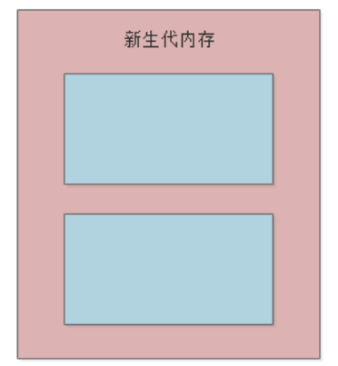
我们以示例代码来看复制算法的执行流程：
public class Kafka {
public static void main(String[] args) throws InterruptedException {
loadReplicaFromDisk();
}
private static void loadReplicaFromDisk() {
ReplicaManager replicaManager = new ReplicaManager();
replicaManager.load();
}
}
假设程序执行到replicaManager.load()，JVM的内存数据结构如下，其中“大量垃圾对象无人引用”表示其它程序产生的垃圾对象，此时新生代中用于分配对象内存的区域也快满了，再次为对象分配内存时就会触发“Minor GC”：
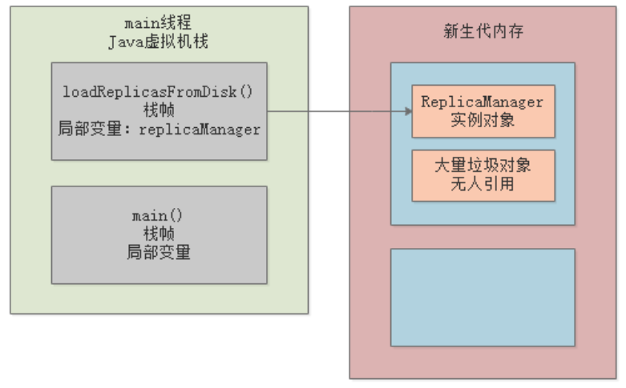
此时，一种最基本的思路就是，首先标记出所有需要回收的对象，在标记完成后统一回收所有被标记的对象。但是这种方法问题也很明显：产生大量内存碎片，导致后续需要为大对象分配空间时内不足。所以，JVM很少用这种方法，而是先将存活对象转移到另一块区域：
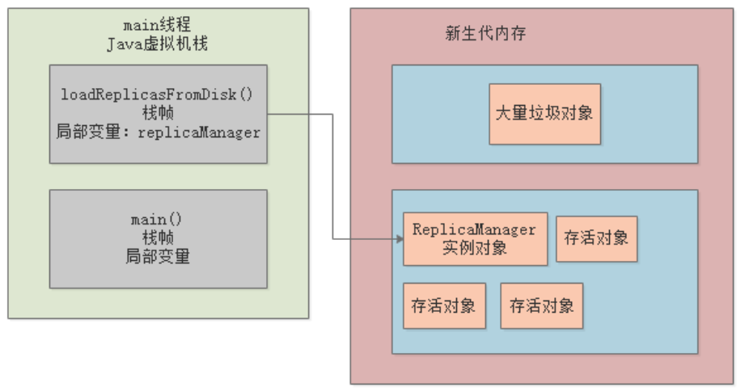
然后一次性把原来那块内存清空：
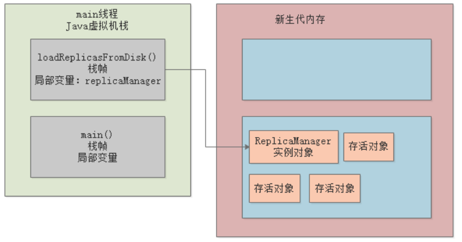
上述整个流程，就是所谓的复制算法：把新生代划分为两块内存区域，只使用其中一块，当这块快满的时候，把存活对象一次性转移到另一块，保证没有内存碎片，然后清空原来那块，依次循环往复。
上述复制算法的缺点很明显：即对内存的使用效率太低。比如我们给新生代分配了1G内存，那其实只有512MB是实际使用的，很浪费内存空间。那么如何来优化呢？
我们回顾下新生代中对象的特点：朝生暮死，也就是说新生代的绝大多数对象在经历1次GC后就会被回收掉，存活率非常低。
根据这个特点， HotSpot VM 采用了一种做法，把新生代区域划分成了三块：1个Eden区（80%），2个Survivor区（各占10%），最开始，对象只在Eden进行分配：
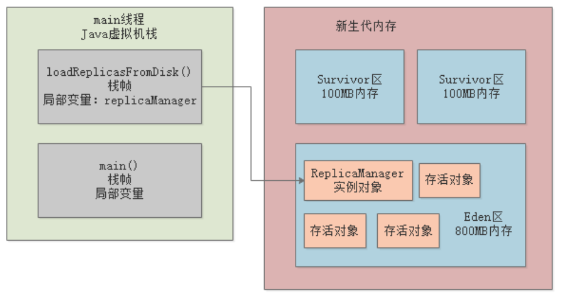
如果Eden区快满了，此时触发GC会将Eden区中的存活对象转移到其中一块Survivor中，同时清空Eden：
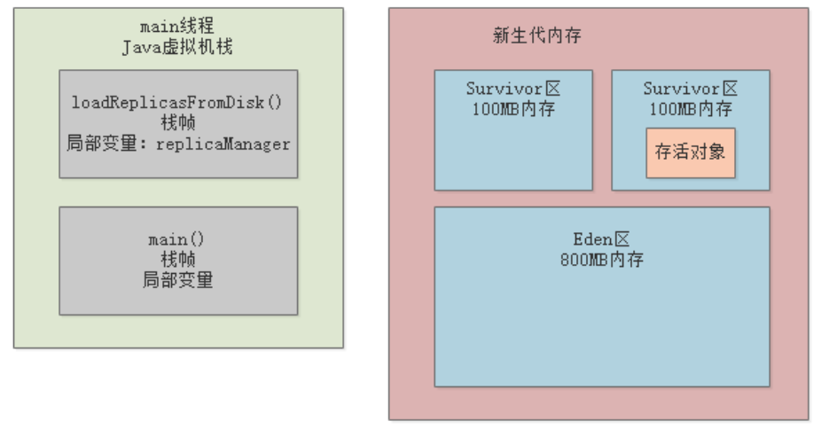
下一次再分配空间时，依然在Eden区分配，然后触发GC，将Eden的存活对象和上一次使用的Survivor中的存活对象转移到另一块空白Survivor中，然后清空Eden和使用过的Survivor，循环往复。
这种内存划分方式的最大好处就是只有10%的空间是闲置的，无论是垃圾回收的性能、内存碎片的控制、内存使用率，都非常好。
通过前一节，大家应该已经了解了新生代的垃圾回收算法，本节我们就来看下老年代的垃圾回收算法——标记整理算法。
这里有一个问题，新生代的对象什么时候会进入老年代？先给出一个结论，一共有五种情况：
之前我们提到过，新生代中的对象每逃过一轮GC，年龄都会加1，到年龄达到15时（也可以通过JVM参数-XX:MaxTenuring Threshold设置），就会被转移到老年代：
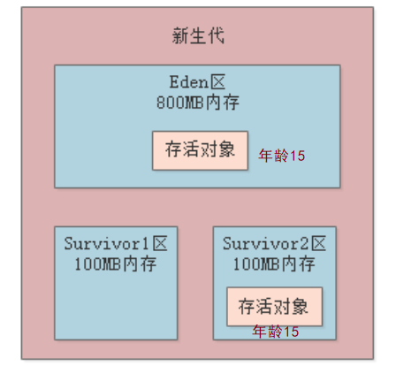
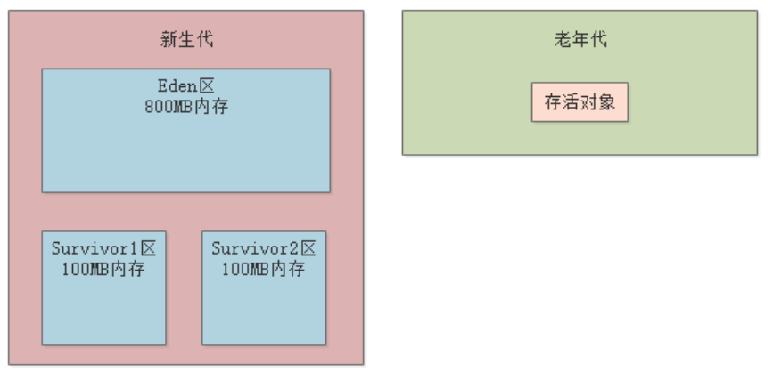
动态对象年龄判断的规则是： Survivor区的存活对象年龄从小到大进行累加，当累加到 X 年龄时的总和大于 Survivor区空间的50%时，那么比X大的对象都会晋升到老年代。
举个例子，比如当前Survivor区的分布如下，累加结果45%小于50%：
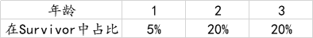
此时新生代GC后，有6%的对象进入Survivor区，则Survivor区分布如下图：
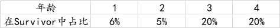
这时从1岁加到4岁的对象总和51% 大于50%，但此时没有大于四岁的对象，即没有对象晋升 。此时再经过一次新生代GC后，又有40%的对象进入Survivor区，Survivor区分布如下图：
Survivor区的对象年龄从小到大进行累加，当累加到 3 年龄时的总和大于50%，那么比3大的都会晋升到老年代，即4岁的20%、5岁的20%晋升到老年代。
可以使用-XX:TargetSurvivorRatio来设置Survivor区空间的百分比，默认值是50
对于一些大对象，JVM会直接将其分配到老年代。通过参数-XX:PretenureSizeThrehold，可以设置阈值，单位为字节。
JVM之所以要这么做，是为了避免新生代中出现屡次逃过GC的大对象，大对象在新生代的Eden和Survivor区的来回复制开销比较大。
最后一种情况就是，Minor GC之后发现存活对象太多，没法放入另一块Survivor区域中，比如下面这种情况：
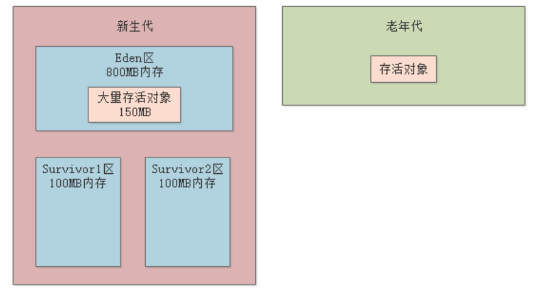
这时候就必须把这些对象全部迁移到老年代去：
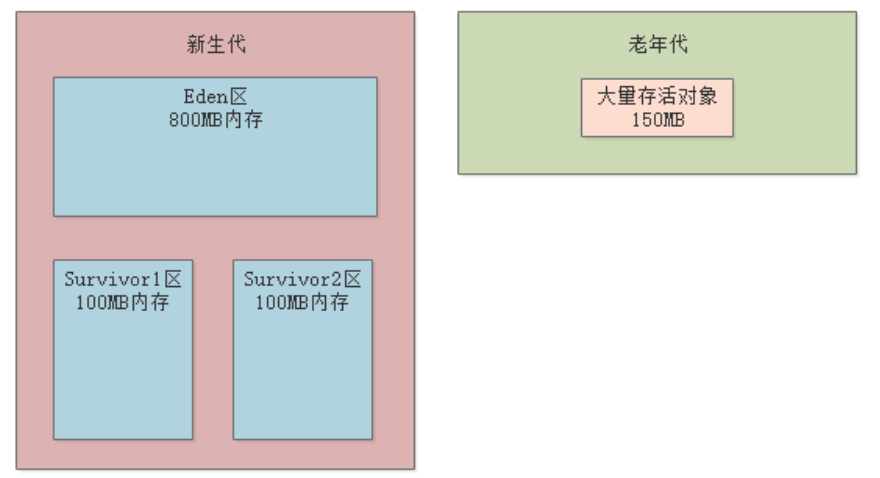
前面讨论了新生代的存活对象何时会转移到老年代，那么问题又来了，如果老年代区域的内存空间不足了怎么办？这里就涉及了空间分配担保机制。
所谓空间分配担保，指在执行任何一次Minor GC之前，JVM会检查老年代的最大连续可用空间是否大于新生代所有对象的总大小：
如果大于，说明这次Minor GC肯定是安全的，因为老年代可以容纳新生代中的所有对象；
如果小于，则 JVM 会查看-XX:HandlePromotionFailure参数值，这个参数值表示是否允许担保失败：
HandlePromotionFailure==true），则看下老年代的最大连续可用空间是否大于历次Minor GC后进入老年代的对象平均大小。如果大于，就进行minior GC，如果这次Minior GC失败了，就会进行FULL GC（所谓FULL GC，就是既对老年代进行垃圾回收，也对新生代进行垃圾回收）；如果小于，先进行FULL GC，再Minor GC。HandlePromotionFailure==false），则直接触发FULL GC，然后再进行一次Minor GC。如果经过上面的操作，老年代可用空间最后发现还是不够，就会导致所谓的OOM内存溢出了。
总之，空间分配担保机制的核心目的就是避免频繁FULL GC，能先预判就先预判，实在不行才FULL GC，因为FULL GC的开销非常大，既要对老年代进行回收，也要对新生代进行回收。
了解了新生代对象何时进入老年代，以及FULL GC的触发时机，我们就可以来看下老年代的标记整理算法的流程了。标记整理算法，其实就是先标记存活对象，然后将存活对象都向内存端边界移动，然后清理掉端边界以外的内存，这样就可以避免出现大量内存碎片。
我们通过示例来看下，假设JVM当前的内存状态如下，老年代中散落着各种存活对象：
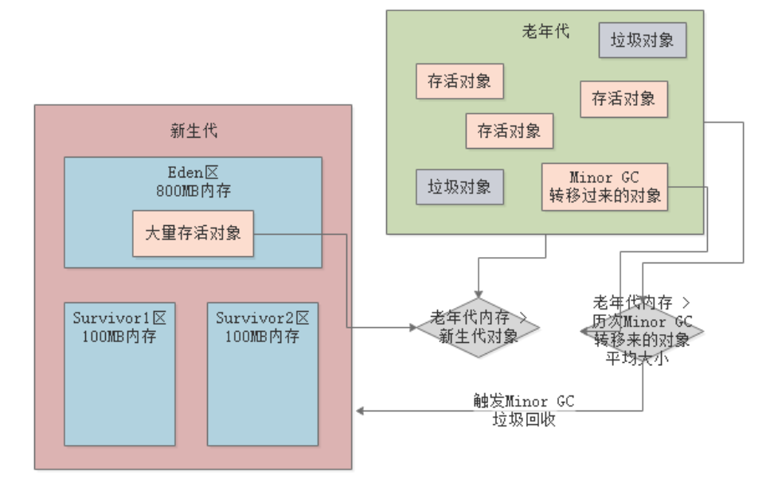
接着，会将存活对象都往内存的一边移动，让它们尽量紧凑，然后一次性把垃圾对象清理掉：
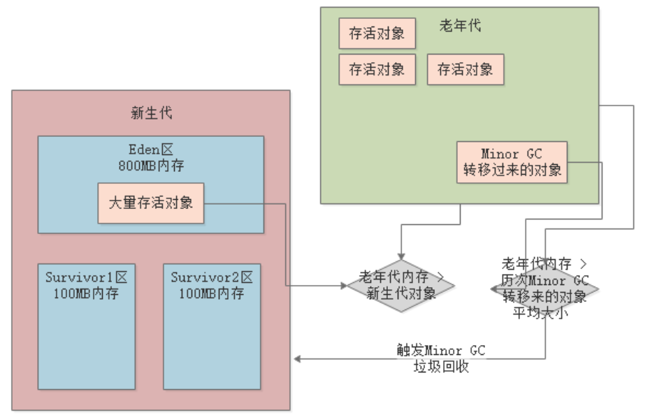
通过前两节的讲解，相信读者已经对新生代的复制算法、老年代的标记整理算法有所了解，本节我们将通过一个生产系统的GC案例，让大家更加透彻的理解JVM中如果进行对象分配和老年代转移，以及Minor GC和Full GC的全过程。
假设现在生产环境有一套“数据计算系统”，不停地从MySQL等各类数据源提取数据到内存中进行计算，系统是分布式的。每个节点（机器）每分钟执行100次操作（提取数据并计算，每次操作耗时10s），每次操作1万条数据，每条数据大小为1KB左右，那么每次数据的总大小就是10MB：
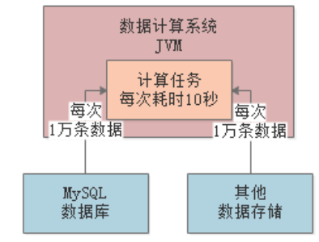
每台机器的配置是4核8G，JVM分配4G内存，其中新生代1.5G，老年代1.5G。
整个系统的初始背景大致就是上面这样，下面来分析可能存在的各种问题。
我们先来看下新生代的空间什么时候会被占满，按照8：1：1来分配Eden和Survivor区，如下图：
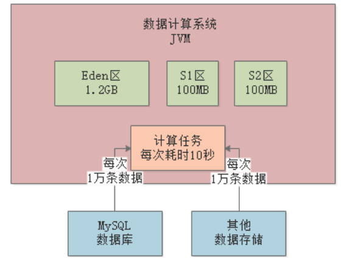
每执行一次操作，Eden区就会填充10MB数据，一分钟执行100次操作就是1000MB，所以Eden区基本上1分钟左右就会被占满。再执行操作时，就会进行Minor以回收一部分的垃圾对象：
首先，检查老年代的连续可用内存空间是否足够（即大于新生代中的所有存活对象大小），如下图，老年代目前是空的，1.5G的可用内存空间可以容纳Eden区中的1.2G对象，所以会直接进行Minor GC：
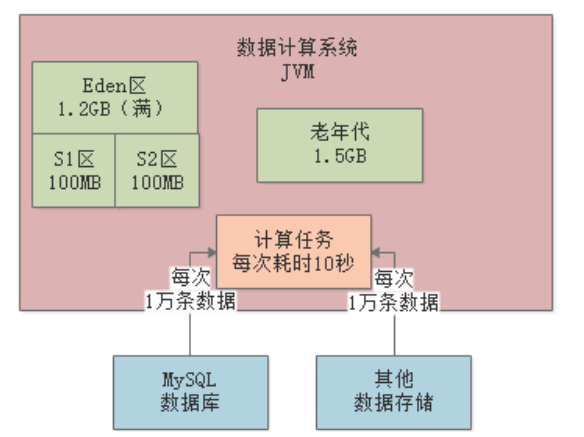
那么，此时Eden区中有多少对象还是存活的呢？之前说了每次操作耗时10s，那么在1分钟内的最后10s时，前面0-50s的任务已经执行完了，1分钟操作100个任务，所以大约有1/6的任务还没有执行完毕，即大约还有20个任务在计算中（大约200MB对象存活）：
其实线上一般是通过GC日志去分析存活对象的大小的，GC日志中清楚的记录了每次Minor GC进入到老年代的对象大小（后面我们会详细讲解如何看懂GC日志），根据我们的线上日志分析，大约也还有200MB对象是存活的。
注意，每一块Survivor区的大小只有100MB，所以是无法容纳200MB的存活对象的，所以会通过空间担保机制，转移到老年代中，并清空Eden区，此时JVM内存空间结构如下：
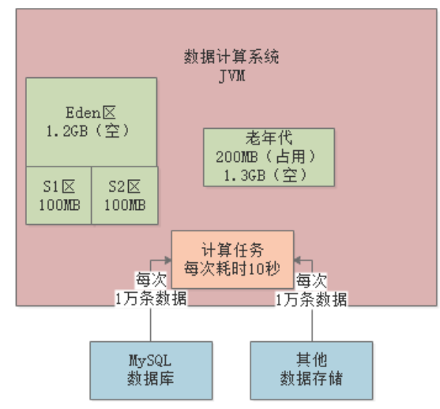
由于每分钟老年代都被填充200MB存活对象，所以到第3分钟结束时，老年代已经有400MB空间被占满，且Eden区也被占满，此时如果要进行Minor GC，会怎么样呢？
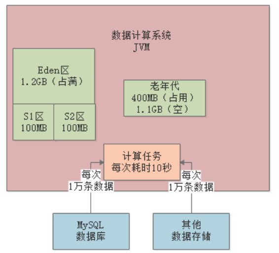
首先，依然检查老年代的连续可用内存空间是否足够（即大于新生代中的所有存活对象大小），此时发现空间是不够的，老年代只有1.1GB可用，而新生代的所有对象大小有1.2GB。
此时，就会判断是否开启了空间担保机制——即判断HandlePromotionFailure是否为true，如果开启了（一般生产环境都会开启），就会看下历代晋升到老年代的对象大小是否小于老年代可用空间，根据之前的计算，历代晋升到老年代的对象大小约为200MB，小于1.1GB，所以JVM就会放心的进行一次Minor GC，此时又有200MB对象进入到老年代。
重复上述过程，大约经过8分钟，经历7次Minor GC后，JVM内存空间结构如下，此时老年代剩余可用空间大约100MB，Eden区已被占满：
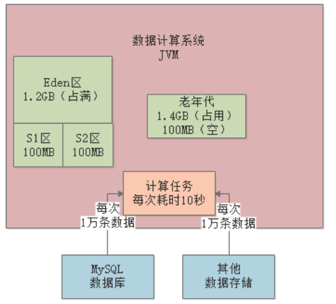
此时又会进行Minor GC前的检查，但是老年代的可用空间已经比历代晋升到老年代的对象空间小了，所以会直接触发一次Full GC，将老年代中的垃圾对象回收（假设此时老年代中的对象全部都可回收）：
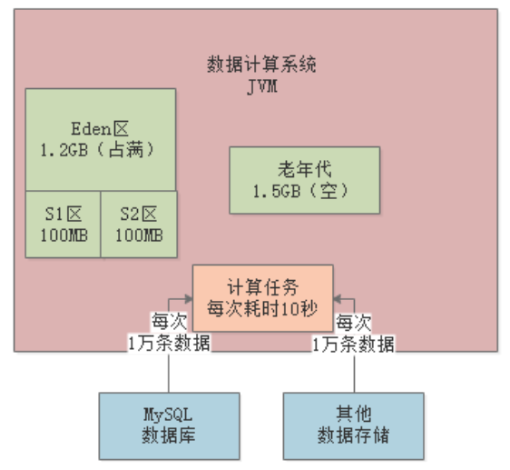
然后紧接着再进行一次Minor GC，将Eden区中的200MB存活对象转移到老年代：
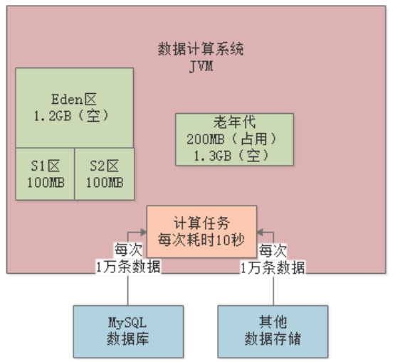
按照上述这个模型，基本上8分钟左右就会触发一次Full GC，这个频率对于生产环境是不可接受的，因为Full GC会严重影响系统性能，这个后面章节我们会详细讲解。
那么该如何进行优化呢？最基本的思路就是增加Survivor的内存大小，因为正是Survivor区不能容纳存活对象（200MB）导致必须晋升到老年代。所以重新分配新生代大小为2G，老年代为1G，同时改变Eden和Survivor的空间比例，这样Survivor区就能容纳每次Minor GC后的存活对象，如下图：
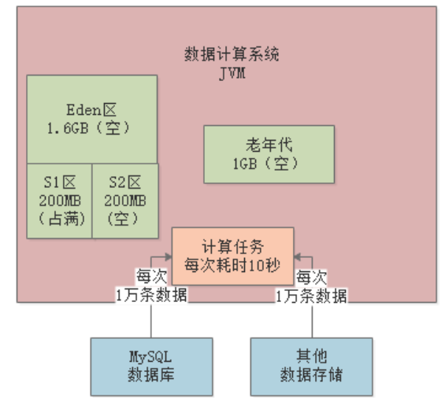
比如经过一段时间，JVM内存结果如下，Eden区被占满，Survivor1区有200MB上一轮Minor GC后的存活对象：
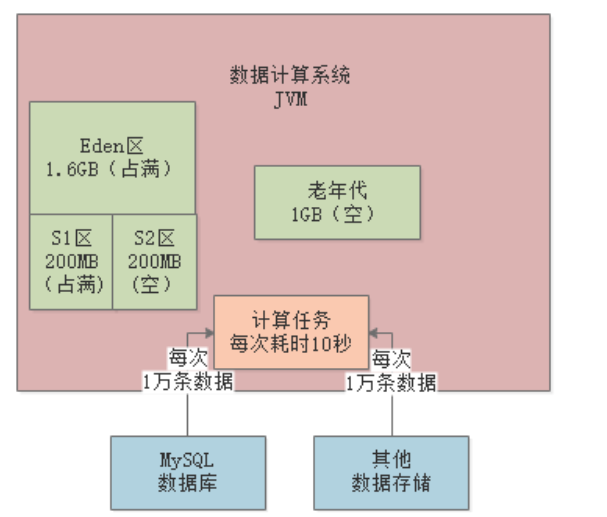
然后此时进行Minor GC，会先清理到S1区中的所有对象，然后将Eden区中的存活对象（200MB）转移到S2区：
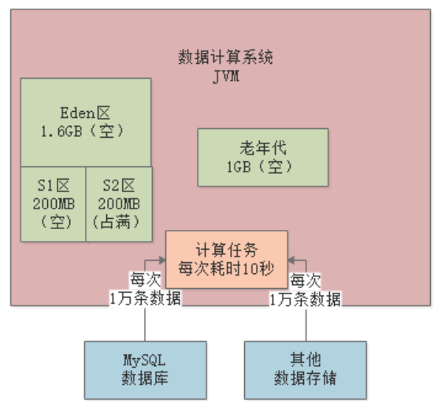
这样，基本上就很少会有对象进入到老年代，Full GC的频率能降低到几小时一次。
最后来总结下本章的内容，本章主要介绍了新生代的复制算法和老年代的标记整理算法的流程，重点需要掌握的是以下几点：
新生代对象何时会进入老年代？
何时会触发新生代的Minor GC？
何时会触发FULL GC？
空间分配担保机制的作用是什么？
同时，本章也给出了一个线上示例，帮助读者更好的理解JVM分代垃圾回收的整个流程。下一章开始，我们将详细介绍各种垃圾回收器，看看它们内部是如何运用GC算法进行垃圾回收的。